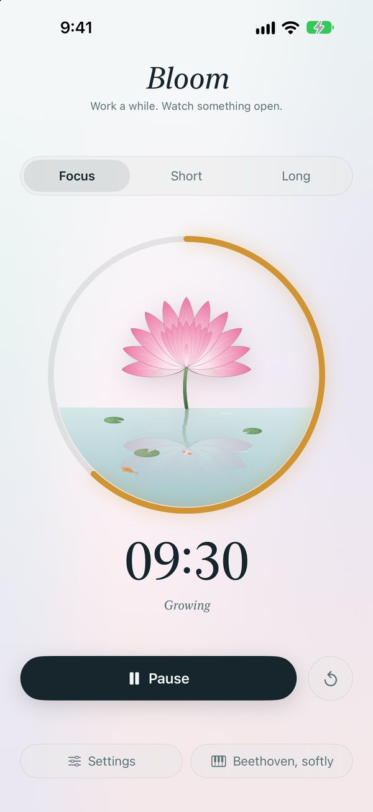
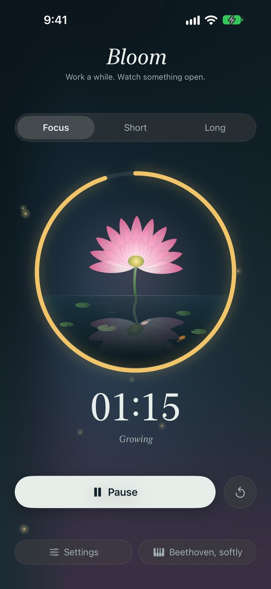
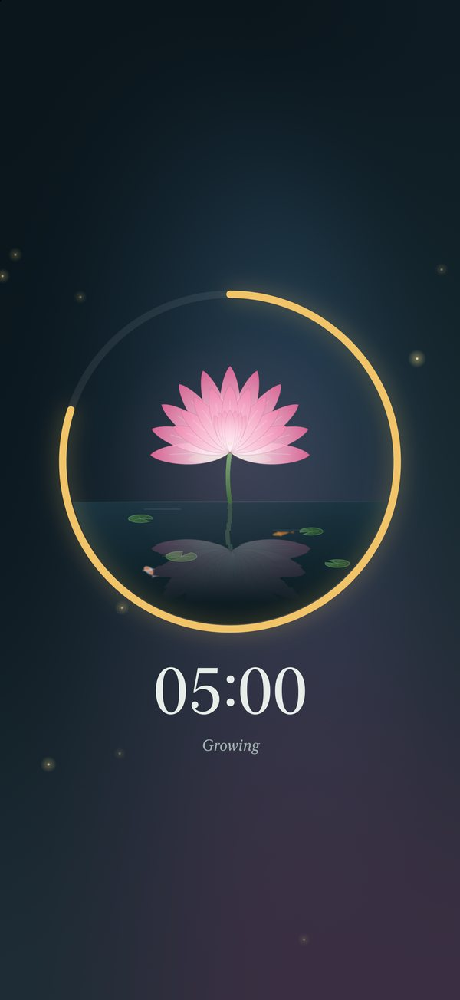
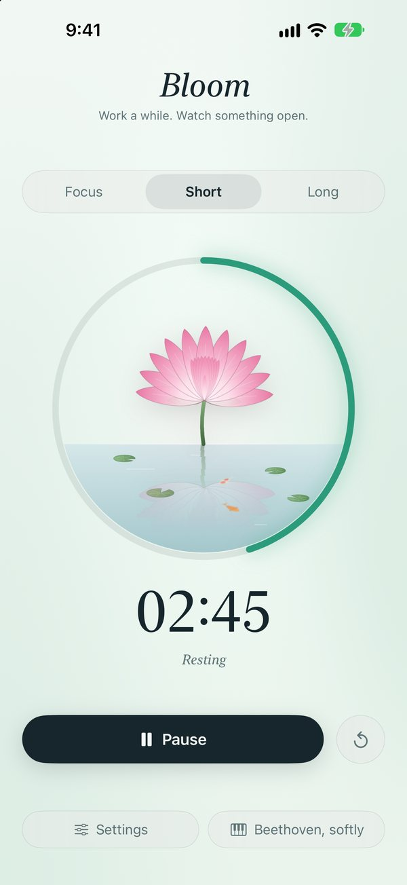

Work a while. Watch something open.
Bloom is a calm focus timer for iPhone. A lotus opens as you work, closes while you rest, and every finished session leaves a lily pad on the pond.
Download on the App StoreFree · iPhone · iOS 17 or later · No account needed

A timer with something to show for it
The lotus grows with your focus, then rests when you do.



What's inside
Simple on purpose.
Grows as you focus
The lotus opens petal by petal through each session, and folds closed on breaks.
A pad for every session
Finished sessions float on the pond, so you can see your day at a glance.
Sound to work to
Beethoven's Moonlight Sonata, rain on leaves, or slow waves. It keeps playing with the screen locked.
Quiet mode
While a session runs, everything but the flower and the time fades away. Tap to bring it back.
A chime when time's up
Even with Bloom closed, a soft chime tells you the session is over.
Day and night
Follows your phone's light or dark setting, and supports larger text and Reduce Motion.
Privacy
Bloom does not collect any personal data.
No account, no ads, no analytics and no tracking. Your settings and today's sessions stay on your iPhone, and deleting Bloom deletes them.
Support
Questions, problems or ideas? Email amit.rishu@gmail.com. Replies usually within 1–2 business days.
I didn't hear anything when a session ended.
Check that notifications are allowed in Settings › Notifications › Bloom, and that your ringer is on.
Can I change how long sessions last?
Yes. Tap Settings in the app: focus runs from 1 to 90 minutes, breaks from 1 to 40. A long break comes after every fourth focus session.
Where did my lily pads go?
The pond shows today's sessions and starts fresh each morning.
The buttons disappeared during a session.
That's quiet mode. Tap anywhere on the screen to bring them back.